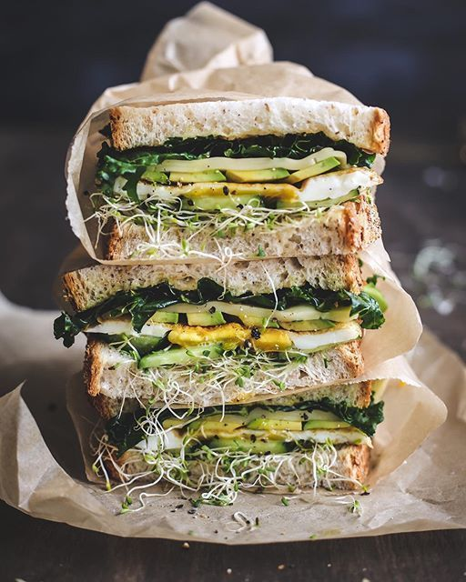

Sandwich de jamón
por Rosa Laura Carrillo
Ingredientes

- Pan de granos enteros (2 rebanadas)
- Mantequilla (1 cdta)
- Jamón (2 rebanadas medianas)
- Aguacate
- Lechuga
- Espinaca
- Huevo
- Ajonjolí
Procedimiento
- Coloca tus dos rebanadas en un plato que te guste y despues sobre ellas coloca una rebanada de jamón.
- Rebana aguacate a tu gusto y colocalo sobre el jamón.
- Despues agrega un huevo frito en una de las rebanadas.
- Agrega una hoja de lechuga y otra de espinaca, o picadas, sobre el huevo.
- Espolvorea un poco de ajonjolí sobre estos.
- Cierra las rebanadas, colocandolas juntas.
- Unta un poco de mantequilla sobre ellas y colocalo sobre una parrilla caiente por 1 minuto de cada lado.
- ¡Disfruta!